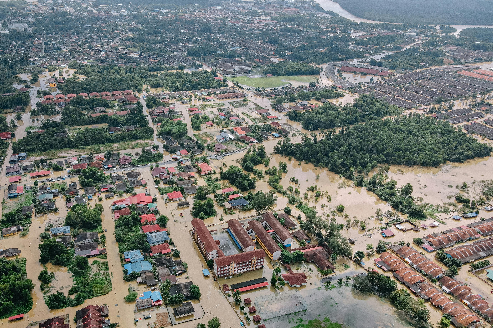
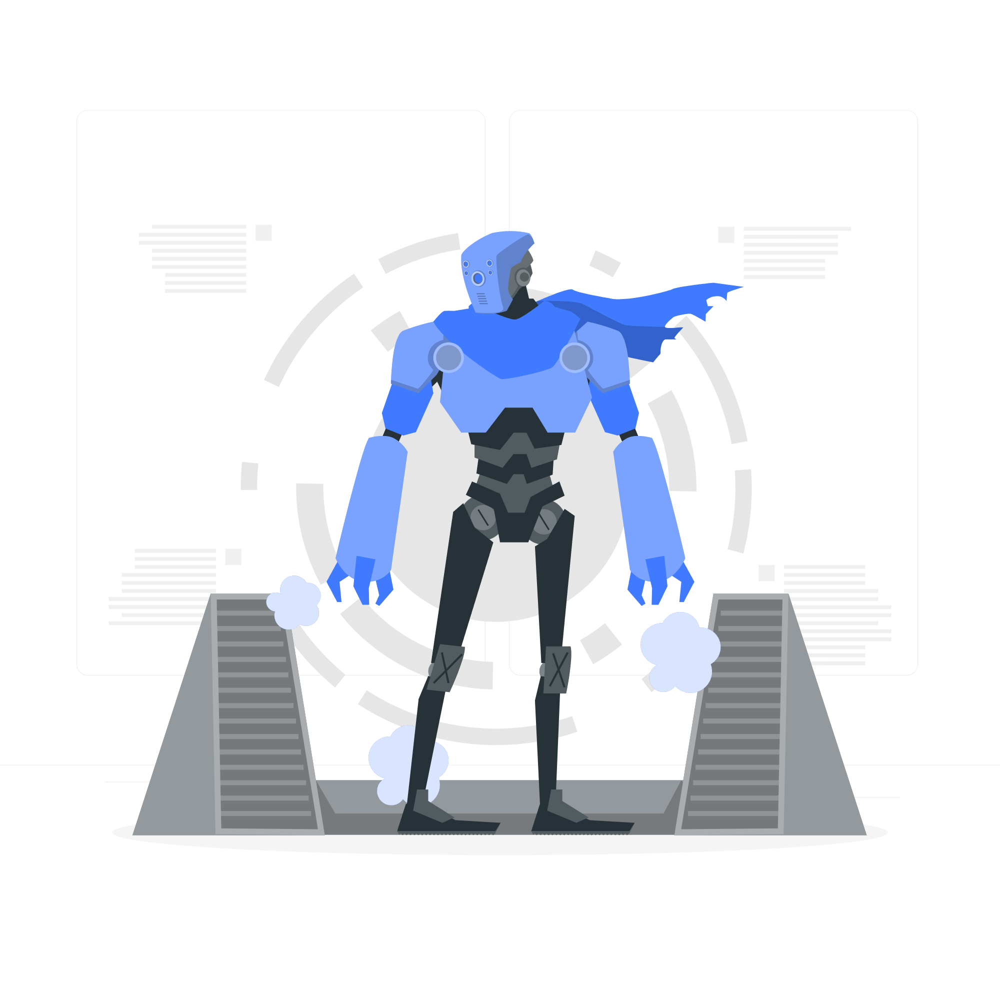
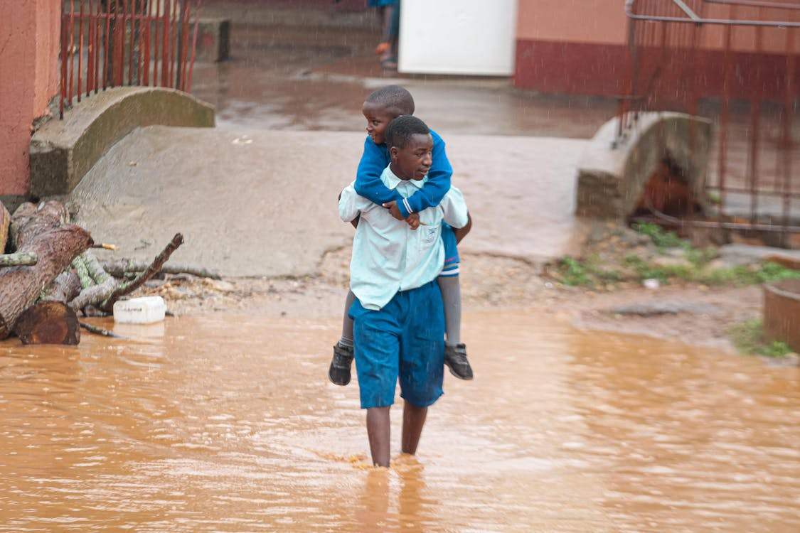

O problema
Milhões de brasileiros enfrentam enchentes sem alertas ou informações claras.
Faltam soluções acessíveis, rápidas e confiáveis para situações de risco.

Tecnologias utilizadas
Utilizamos inteligência artificial, big data e sensoriamento remoto para monitorar e prever enchentes com precisão e antecedência.
Sem depender de sistemas complexos ou conexão constante.

Objetivos do projeto
Reduzir riscos e salvar vidas por meio da informação acessível.
Facilitar a tomada de decisão em momentos críticos.
Público-alvo
Moradores de áreas urbanas de risco em todo o Brasil.
Especialmente pessoas com acesso limitado à internet.

Benefícios
Interface simples, leve, rápida e que funciona até offline.
Acesso direto a abrigos, dicas e mapas de risco.

Solução na prática
Informa com antecedência, orienta evacuação e oferece rotas seguras.
Reduz o pânico e facilita o acesso a ajuda em emergências.